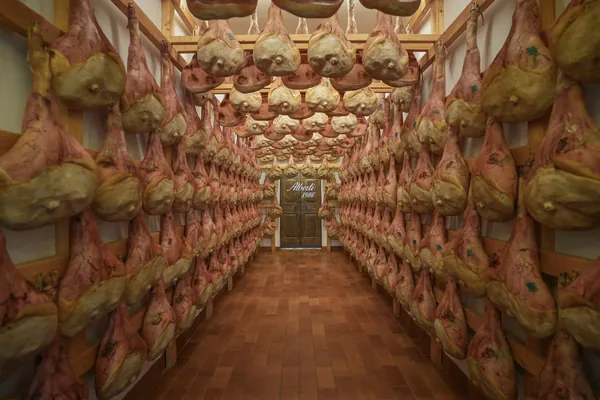

La famiglia
Cinque generazioni nello stesso paese
Dal 1906 la famiglia Alberti produce prosciutto di San Daniele nel cuore del paese. Oltre al prosciuttificio ci sono la Storica Osteria e le visite guidate, per chi vuole vedere dove nasce.